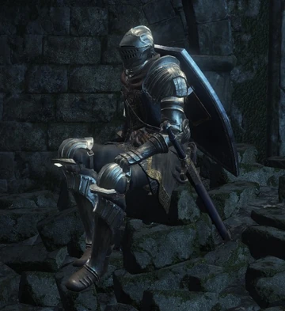

Anri de Astora |
||
|---|---|---|
|
 |
Anri é uma NPC encontrada em Dark Souls 3, ele é uma das crianças que fugiram de Aldritch e como o jogador, Anri é um não-incendido que procura pelos senhores das cinzas. O genêro de Anri muda de acordo com a escolha de genêro do jogador, sendo sempre contraria a essa escolha. Anri pode ser encontrado diversas vezes ao longo da jornada e pode também servir de invocação para certos bosses, além do mais Anri faz parte do pacto "Sentinelas Azuis", protetorres dos mais fracos.
Anri pode ser encontrado pela primeira vez na estrada dos sacrifícios, acompanhado de seu colega Horace.
"Olá. Como vai? Sou Anri de
Astora. Incandescente, como você.
Este é Horace, um amigo e
companheiro de viagem.
Você também está em busca dos Lordes
das Cinzas? Estamos bem avançados na estrada dos
sacrifícios.
Abaixo de nós está a Floresta da Crucificação.
Além da floresta inundada fica a Fortaleza Farron, lar da
Legião dos Mortos-Vivos. Mais adiante ainda está a Catedral
das Profundezas.
Buscamos a catedral, lar do sinistro
Aldrich. Podemos seguir caminhos separados agora, mas ambos
buscamos lordes.
Da próxima vez que nos cruzarmos, um poderá
encontrar o outro em um momento de necessidade. Que as
chamas guiem seu caminho.
"Ah, sim, Horace... Ele não é muito falante. Mas não pense mal dele. Ele é um cavaleiro honesto e bondoso;
um ótimo parceiro para esta jornada extenuante.
Sem a ajuda dele, eu já teria amaldiçoado este dever oneroso há muito tempo."
Anri é um dos personagens no jogo que tem uma missão acompanhada, porém Anri é um caso especial contendo duas missões diferentes:
{kind=link}